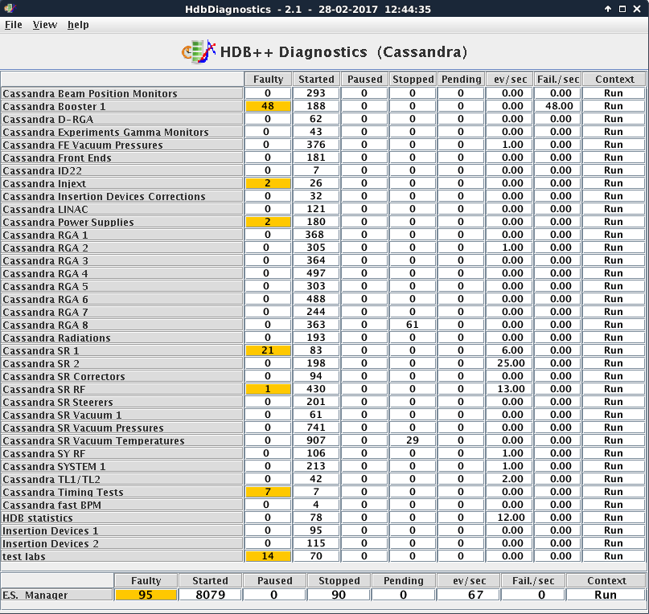
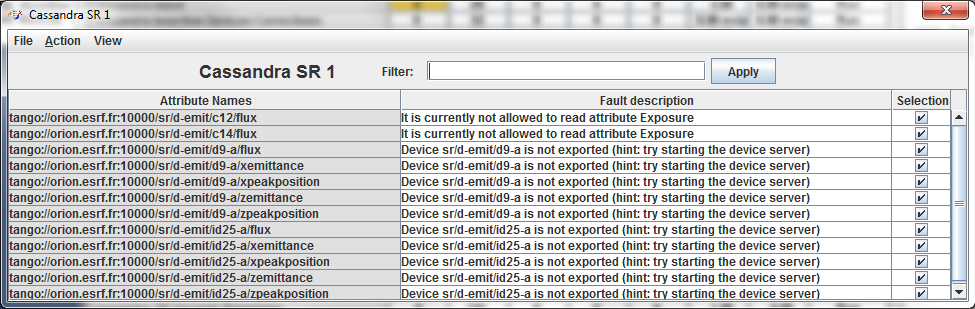
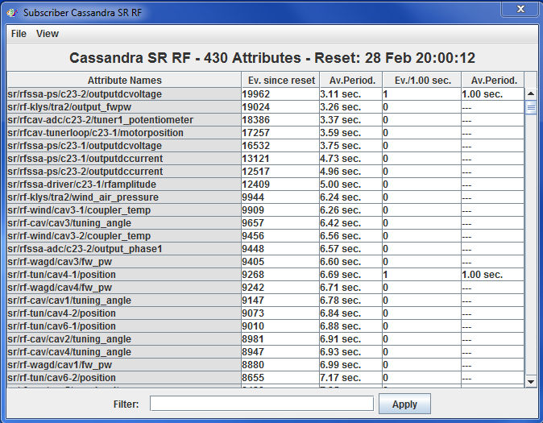
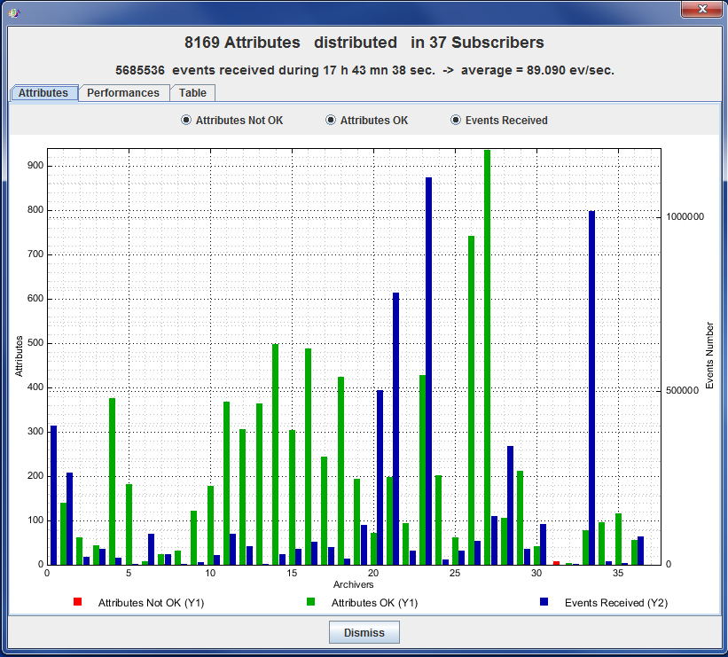
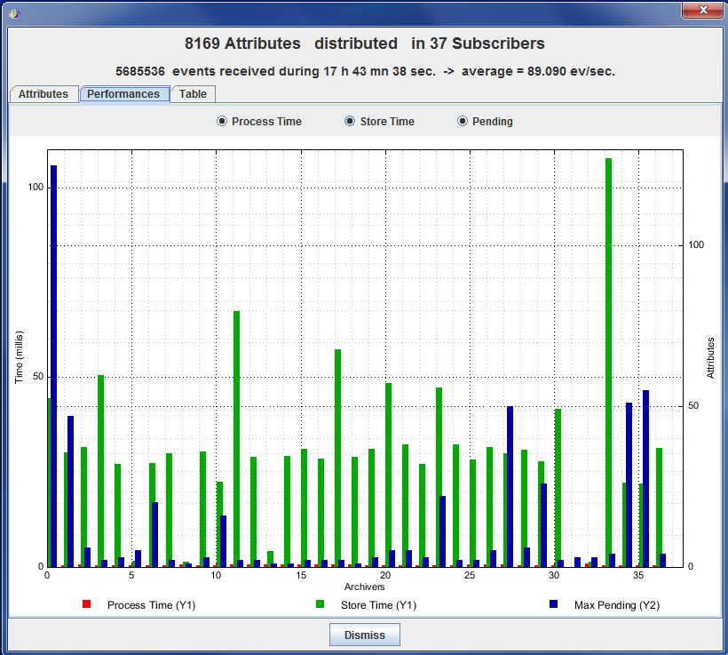
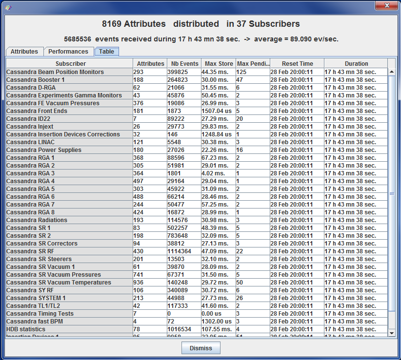

Diagnostics¶
- This is tool is used to control the behaviour of your HDB++ system.
- It controls your ‘HdbConfiguratorManager’ and ‘HdbEventSubscriber’ devices.
- It can be launched by View / Diagnostics menu in configurator GUI.
- Or directly by the command: java org.tango.hdb_configurator.diagnostics.HdbDiagnostics
Main window¶

- The main window display a table where:
rows are archivers (last row is the manager).
- columns are the number of attribute faulty, started, paused, stopped and statistics.
And finaly the archiver context.
By a double click on a cell (or using right click menu) you can have a detailed display.
Faulty attributes¶

- If you click on a Faulty cell, you can see:
- The list of faulty attributes
- The error message
By a right click on Selection Column, you can stop or remove selected attributes.
Attribute statistics¶

- Some statistics are computed (Events and Failures by period) by the HdbEventSubscriber device.
- For instance if the property StatisticsTimeWindow is 1, you have the number of events and failures by seconds.
- If you click on a statistics cell you will have statistics by attribute since last reset.
Change context¶
- If you double click on l;ast column (Context), you can change the specified HdbEventSubscriber context.
- The better way is to do it on HdbConfiguratorManager (last row) to change context on all archivers.
Distribution¶
Distribution window is available using View / Distribution menu.

- The first tab gives a chart displaying the distribution:
- Number of faulty attributes by archiver.
- Number of OK attributes by archiver.
- Number of events received by archiver since last reset.
* The second tab gives a chart displaying the maximum:
- Process time (from event reception to storage)
- Store time (time to store value)
- Pending (number of attributes waiting to be archived)

* The third tab gives the same information as numeric values in a table.
